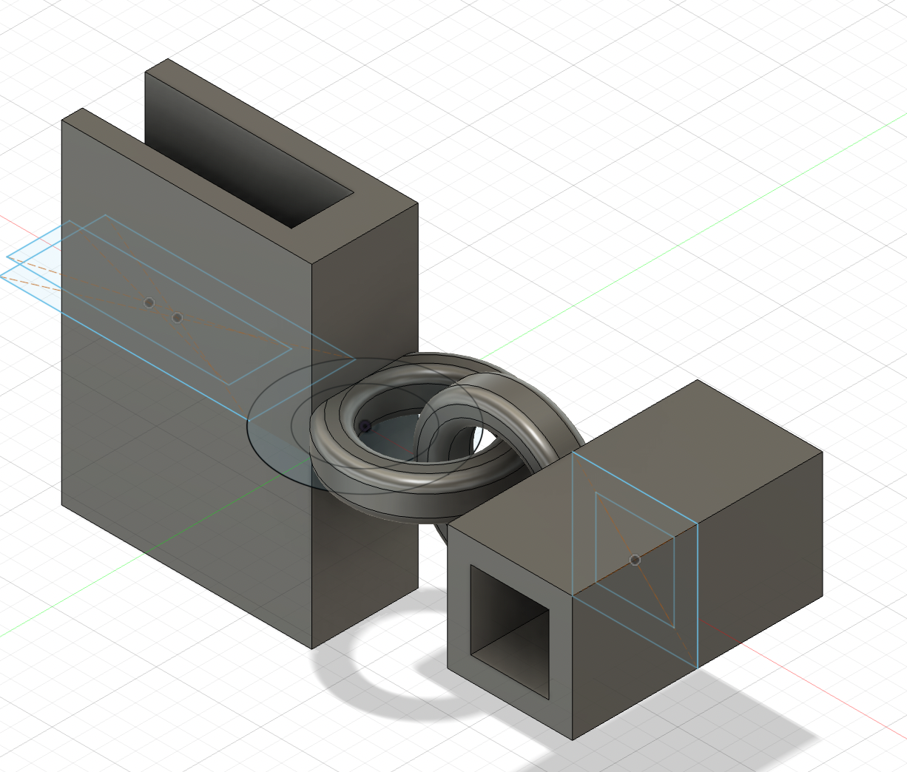

Considerations:
The "smart roof" will consist of columns of shutters, where all the slats are linked together by a central shaft (dowel). The dowel will be pulled up or down by a servo motor perched on top of the column: the rotation of the arm of the servo upwards will pull the dowel up, thus closing the shutters, while the movement of the arm in the other direction will push the dowel down, closing the shutters but with the opposite side of the slats facing out. This is important because I will have one face of the shutters painted black (a heat absorbant color), while the other face will be painted white (heat reflective). The system will know whether to pull the dowel up or down based on light and temperature sensors located on the frame of the shutter. When the light/heat is above a certain threshold (which I will likely determine by a function that takes both heat and light into account), the motor will move such that the white side faces out. Below the threshold, the black side will be facing out. This will then help temperature regulate the space beneath the roof, whether that be a bus stop shelter, a house, or perhaps even a vehicle. Here is the 3D model I created in Fusion.

In this diagram, the gray box on the upper left corner of the frame schematically represents the temperature and light sensors. One consideration I have to keep thinking about is that it would likely be more practical to have the temperature sensor measure the temperature of the room underneath the roof: after all, if it is cold outside but the room happens to be hosting a party with lots of body heat, perhaps it would be better for the roof to reflect heat to cool the building, rather than absorb sunlight. I didn't include it in the diagram, but there will be wires linking the sensor to the servo motor, depicted on top of the frame here. I will also need to figure out where to locate the breadboard and Arduino. Preferably, I will be able to use a smaller version of these so it isn't so bulky, but either way I will probably need to build a small housing for the circuitry which will be attached to the frame.
In terms of the motor aspect of this system, the schematic shown here does not accurately represent what a servo motor looks like. My idea is to have the arm of the servo motor positioned such that its rotation is exactly parallel to the vertical path the dowel will take. It will be somehow attached to the dowel (for example, with something like a straw which can be easily tuned to the exact length necessary, but preferably more elegant in appearance. However, I am not sure if a straw might be too stiff to allow for the servo to properly pull the dowel--this is something I will need to play around with). Thus, when the servo motor swivels upward, it will pull the dowel shaft upwards in an arcing motion. When the servo arm swivels downward, it will push the dowel shaft The arc motion is important because if the dowel were merely jerked straight upward, the slats would not turn properly: when opening these shutters, you need to pull the dowel out a little and then up in order to accomodate the arc of the slats themselves (as they do not have a constant rotational diameter).
Each slat will be attached to two pins on either end (which I will probably screw into the wood), which will slot into evenly spaced holes in the frame. The holes have to be big and deep enough to allow for these slats to smoothly rotate. Additionally, each slat will be attached to the dowel by a set of interlocking threaded eyelets, which will allow for more free motion between the dowels and the slats.
This model shown here only depicts one column of shutters. I envision my final project including multiple columns all next to each other and attached to each other, something large enough to cover a small roof. The other advantage of having multiple columns attached together is that each column doesn't necessarily have to be flipped to the same color. This could potentially allow for more fine-tuned temperature regulation. I still have to figure out what I want the scale of each column to be.
This is still quite a rough idea and I had a pretty difficult time modeling everything properly in Fusion, so this model definitely isn't fully accurate. However, it does capture the general idea, and it was helpful for me to make to get a better idea of how everything will fit together spatially.
I have managed to build a set of shutters (out of cardboard) and get the mechanical/motorized motion of the shutters to work. See Week 7 Documentation for more details. Here is a video of the MVP working.
Since the whole point of my project is to produce tiles that will be mounted onto a roof, the first step of moving fom the minimum viable product, shown above, to the final version was to change the material from cardboard to something less flimsy and more durable that could (more or less) withstand the elements. I chose to use wood. I was able to adapt my original Fusion360 model for the frame and louvers and transfer it to wood. For the side planks of the frame in the cardboard version, I did not model the holes for the louver axles. Rather, I printed out just a flat sheet of cardboard and drilled the holes in afterwards so I could better measure them out by hand. But for this version, since I already had the cardboard model to go off of, I was able to model the distance between holes in Fusion so that it printed out already with holes. This eliminated risk of error and inaccuracy that might arise if I drilled by hand. Another problem I had to address was that in the cardboard version, when the frame is laid on a flat surface, the louvers will scrape against the surface as they flip, which impedes their motion. I thus had to make the frame thicker so that the louvers were raised further up and could have more clearance with the ground surface, allowing them to rotate without impedance. Here is the Fusion model I used for the frame side, holes included.

Before attaching the pieces of the frame to each other, I had to suspend the louvers between them. Here I encountered a problem. In the cardboard version, the louver axle was a piece of wood dowel that I had jammed into the side of the cardboard rectangle, between the flutes. Obviously, wood does not have flutes, so I would have to come up with a different way to attach the axle. I could not simply glue the wood dowel to one face of the shutter, because then it would not rotate with a consistent radius -- that is to say, I needed to attach the dowel exactly to the edge of the wood piece and not to either face. But because the wood piece is not very thick, there was not much surface area on the edge onto which to glue the dowel. Moreover, glue would be a messy and flimsy solution. I had initially envisioned using a 3D printed connector piece like the one I had used in the cardboard version, which would clamp to the louver and have a hole on the other side into which the wooden dowel could be glued. However, I realized that I could eliminate the need for glue by simply designing a piece that included both the clamping part and the axle dowel itself. With this in mind, I made a joint-dowel hybrid where one half clamped to the wood piece and the other half had a cylindrical protruding axle piece that could be threaded through the hole of the frame. Here is the piece I designed in Fusion. I designed the width of the clamp part to exactly match the thickness of the wood louvers, so the piece can simply slide onto the louver and stay in place without any glue.
I next had to devise a way to attach each louver to the central dowel that would allow all of them to move in unison. In the cardboard model, I made makeshift eyelets by wrapping pieces of wire around the central dowel and linking them to loops of wire stuck into the flutes of the cardboard louvers. This worked decently well; however, it involved a lot of tedious and inefficient manual labor, and also was imperfect because sometimes the wrapped wire would slip along the central dowel, preventing the louvers from all moving together in unison. My first idea to fix this was to 3D print eyelets that were already looped through each other, thus eliminating the tiresome step of wrapping and interlinking wire by hand. Essentially, the eyelet had to have one segment that would clamp onto each louver, and another segment that would be attached to the central dowel. These two segments had to be connected to each other such that movement of one prompted movement of the other, but there also had to be some freedom of motion between them since the louvers do not turn with constant radius. To this effect, this was the piece I designed (the central dowel would be threaded through the rectangular tunnel piece of each eyelet, one eyelet per louver.)
The left photo below shows how the eyelet links the louver to the dowel in close up, and the right photo shows how all the louvers (with their axles attached) were attached to the central dowel.


However, this did not work as well as I had hoped. The main problem was that the rectangular tunnel part was either too narrow for the central dowel, such that I could not even thread them on, or it was wide enough to thread them on but then the fit was too loose such that they would slip around. This was a big issue since the whole point was that the connection to the central dowel would not slip so they could move in unison. I realized that I could solve this problem by designing a 3D printed piece that included all the eyelets as well as the central dowel, already attached. Thus, rather than having to thread each eyelet onto the central dowel and get the fit exactly right, it would just come off the 3D printer as one big piece already ready to use. Here is the piece I ended up designing and printing.

As you can see, it was a bit too big for the Prusa printer, but I was able to solve this by rotating it and having it print diagonally. It was actually quite simple to design this in Fusion: I just took my original eyelet design, copied it nine times (once for each louver), lined them up, and then extruded a rectangular beam through the tunnels of all nine of them. I thus had a central dowel with nine eyelets already attached. This shape required a lot of supports to print, and so it was quite difficult to extricate after it finished printing. After a lot of hard work chipping away at the plastic with scissors, wire cutters, and box cutters, I managed to get a somewhat clean product.
The next order of business was to color my louvers. Since the whole point of my project is that the tiles turn black when it is cold out and white when it is hot out, it is really important that they actually have these colors. With the cardboard version, I had tried painting the louvers, which I did not enjoy because it got extremely messy and did not produce an even coat. This time, I decided to color the louvers with vinyl stickers instead. I used the box cutters to cut out strips of black and white vinyl of the exact size of the louvers, and stuck them to either side. Now, my louvers were properly colored. At this point, I was able to attach all of them to the central dowel and their own axles, and then insert them properly into the frame and assemble the frame around them.
The next step was to figure out where I would place the stepper motor I was using to rotate the louvers.